| |
TPR's Scandinavia Trip
Copenhagen Sommerland Sjaelland
Bakken
Tivoli Gardens
Bon Bon Land
Hansa Park Legoland Billund Djurs Sommerland
Tivoli Friheden Farup Sommerland Tusenfryd Liseberg Skara Sommerland Grona Lund Power Park Sarkanemmi Linnemaki
Today was a very relaxing day on the tour as our park is just right smack dab in the middle of Copenhagen within walking distance of our hotel.
If you need to find Tivoli Gardens, it's right by Scandinavian Airlines Headquarters (Great Airline BTW).
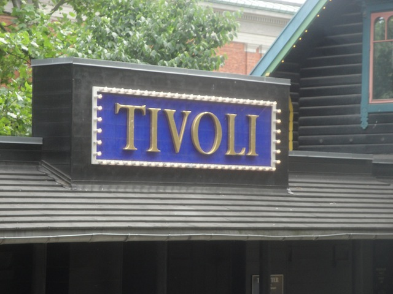
And good news for us in that not only is Tivoli Gardens close and easy to get to, but its also one of the best and prettiest theme parks I've been to.
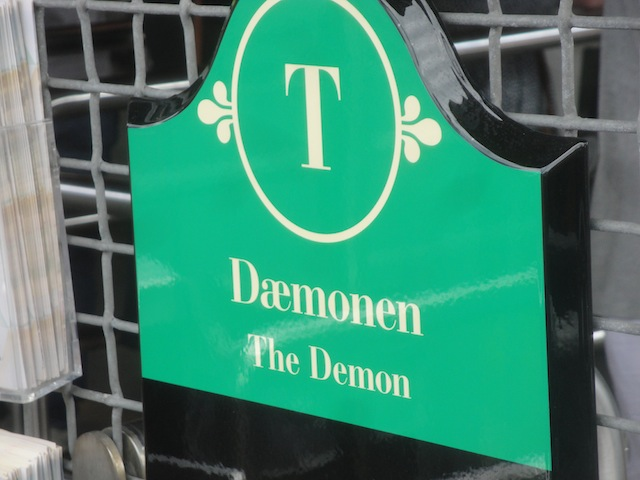
First things first. Lets start out this ERT with some rides on Daemonen.
Yeah. This is how ERT should be. =)
 Daemonen is definetly one of the more interseting B&M Floorless Coasters without a doubt.
Daemonen is definetly one of the more interseting B&M Floorless Coasters without a doubt.
 Love the view you get from Daemonen.
Love the view you get from Daemonen.
Its a fun little B&M with some good forces all throughout the ride.
 The only problem I have with the ride is that it's short. Really freaking short. But hey. I still like it.
The only problem I have with the ride is that it's short. Really freaking short. But hey. I still like it.
 All right. Now lets move onto the Rutschebanen here at Tivoli Gardens. Another one of those Classic Scenic Railways.
All right. Now lets move onto the Rutschebanen here at Tivoli Gardens. Another one of those Classic Scenic Railways.
Screw having regular old ERT!! Lets start off with a backstage tour!!!
"Sorry. But before we give you guys any more privelages, you're gonna have to pay us by washing all of our dishes. Thank you."
The Scenic Railway here used to go through a naked woman like the one at Bakken, but sadly they got rid of her.
Stop!!! Photo Op in the train!!!
Quick History lesson on this ride. There's a lot of cool history to this ride, but by the coolest thing was that this ride was bombed by the nazis in World War II. Yes, you read that right. This ride was BOMBED by NAZIS. And its still running today. What's your excuse now Six Flags Magic Mountain?
 Ok. Another quick history fact that I have to mention. Tivoli Gardens just brought back the mountains on the ride. They were removed sometime in the 1920s (I think. Don't quote me on that!! I could be wrong!!!) because the city of Copenhagen thought they were an eye sore. They wanted Copenhagen to be a very serious city and how serious can you be with mountains on a roller coaster being the first thing you see getting off the train. Glad to see Copenhagen be much more open to fun. =)
Ok. Another quick history fact that I have to mention. Tivoli Gardens just brought back the mountains on the ride. They were removed sometime in the 1920s (I think. Don't quote me on that!! I could be wrong!!!) because the city of Copenhagen thought they were an eye sore. They wanted Copenhagen to be a very serious city and how serious can you be with mountains on a roller coaster being the first thing you see getting off the train. Glad to see Copenhagen be much more open to fun. =)
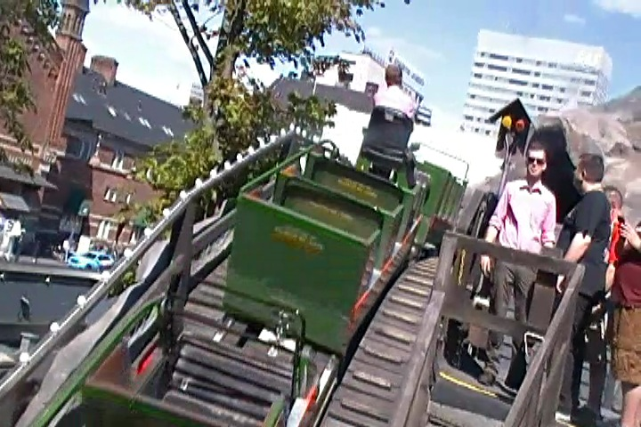
Oh gee. We're in the middle of the roller coaster. How will we ever get down? =)
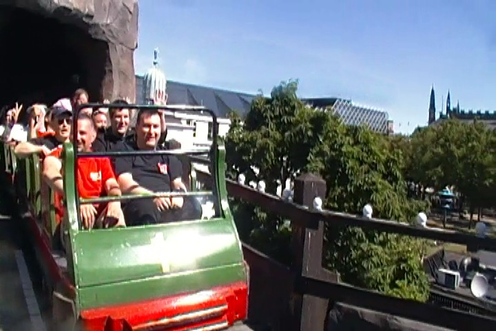
Yep. We got down via roller coaster!!
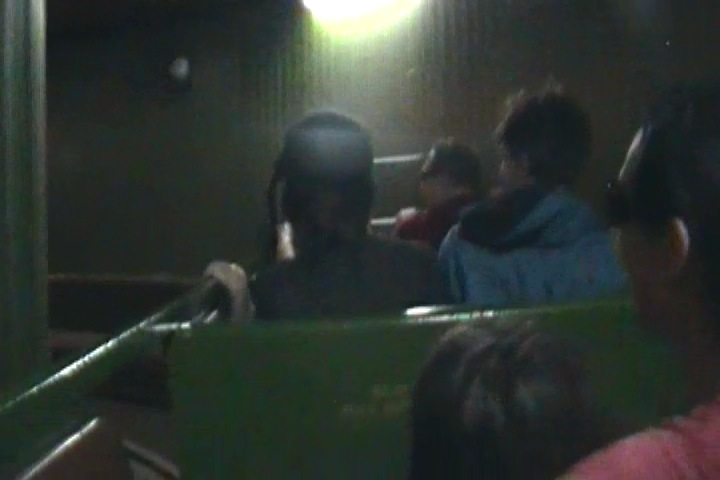
This ended up being a lights on ride for us, so we could see just how narrow those tunnels actually are. Never in America.
Remember everyone. Standing up in the cars is strictly forbidden.
 "Screw you!! We run this ride!! We can do whatever the hell we want!!"
"Screw you!! We run this ride!! We can do whatever the hell we want!!"
 And of course, we got some complete rides on Rutschebanen to avoid the "Does it count as a credit if you only ride half the ride?" question.
And of course, we got some complete rides on Rutschebanen to avoid the "Does it count as a credit if you only ride half the ride?" question.
 High five with caution you guys.
High five with caution you guys.
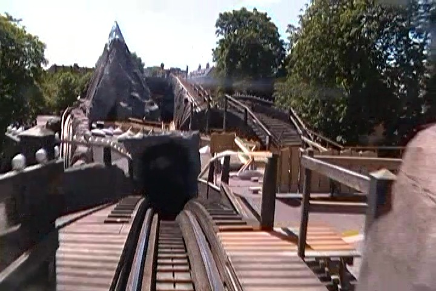
This one, unlike the Bakken one, still has the brakeman, which really gives it some good airtime. =)
Well, ERT is over. Lets move on and get to one of the lowest capacity cool flat rides in the park. Vertigo.
Vertigo, while not quite as intense as it looks, is still a really good flat ride.
 Yes. You really are flipping at this point of the ride.
Yes. You really are flipping at this point of the ride.
Just one last credit for us to get at Tivoli Gardens.
This ride is proudly sponsered by Camel. The animal, not the cigarette company.
Tivoli Gardens has got to be one of the most beautiful parks in the world.
 Oh crap. There's a pseudo-credit for the super whores to get.
Oh crap. There's a pseudo-credit for the super whores to get.
Hey, it may not count as a credit, but I really enjoyed the ride.
Why are good psuedo-credits strictly a European thing?
Hey, I got an idea. Lets go ride the Hans Christian Anderson Dark Ride.
Hmm. What's the difference between Hans Christan Anderson Ariel and Disney Ariel? I better look closer and see. =)
And here's Elsa from the Snow Queen (Frozen). Please don't let there be a sh*tty Let It Go cover in here.
There you go. Here's a future movie for you Disney.
All right. Lets try out Danish Fast Food for lunch.
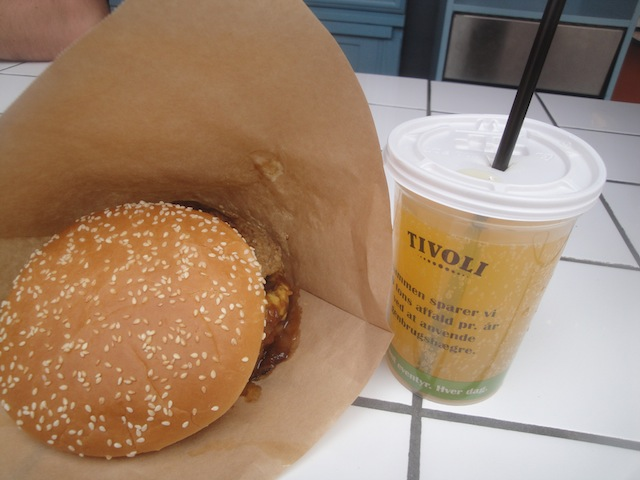
Not bad. But overall, nothing special.
 Hmm. Recycle my cup and get 5 kroner in return. Deal (Dear U.S Parks, ADOPT THIS IDEA!!!!!)!!
Hmm. Recycle my cup and get 5 kroner in return. Deal (Dear U.S Parks, ADOPT THIS IDEA!!!!!)!!
 Bravo. Nobody cares.
Bravo. Nobody cares.
 I just love walking around Tivoli Gardens.
I just love walking around Tivoli Gardens.
Again, I love Europe.
I heard good things about the fun house in Tivoli Gardens. Lets check it out.
Come on man. The bridge won't collapse. *whisper* Start filming now *whisper*.
Don't worry about the bridge. It'll go down on its own.
 Don't kill yourself on the slide Nolan.
Don't kill yourself on the slide Nolan.
This really does not feel like an amusement park.
 Fun little fact about Daemonen. This is the only B&M we'll be riding on the trip.
Fun little fact about Daemonen. This is the only B&M we'll be riding on the trip.
Of course, it wouldn't be a popular tourist stop in Copenhagen without tacky tourist merchandise.
Hey Alisa. Look what I found at Tivoli Gardens.
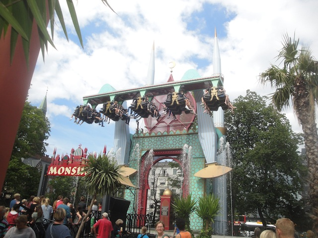
I always enjoyed the regular magic carpets, so I imagine an inverted one would be fun.
Another beautiful shot of Tivoli Gardens.
In case you want to know what kind of fish you're making fat by feeding it.
Don't even think about stealing my eggs. I'm watching you.
Warning. Man-eating clams can be found at Tivoli Gardens. Meh, at least they only got Shirley.
 Good job asshole. You feed the fish and now they're puking up yolks.
Good job asshole. You feed the fish and now they're puking up yolks.
I'll take the Screw Set thank you very much. =)
For those in the area, they frequently have shows at Tivoli Gardens.
Brooke's favorite painting in all of Tivoli Gardens.
I regret not trying Champagne flavored Ice Cream when I was in Denmark.
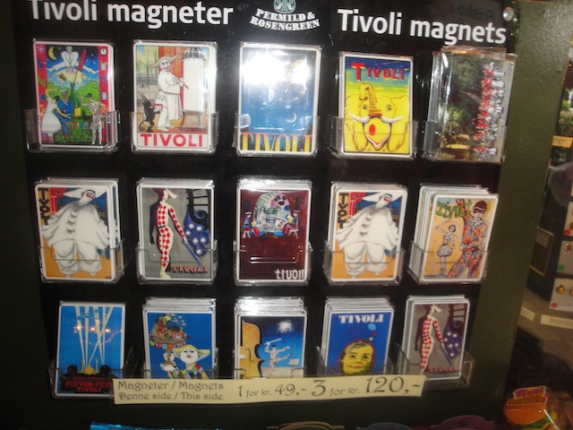
Ooh. Look at the pretty park merchandise.
Hi there random cat. What are you doing in Tivoli Gardens?
 I love the palace in Tivoli Gardens.
I love the palace in Tivoli Gardens.
 Hey. I'm here. Why not check out the Art Museum within the park.
Hey. I'm here. Why not check out the Art Museum within the park.
Love all that they have here.
TAKE THE TUNNEL!!!!
I've been to Copenhagen and I can prove it!!! Look at my crappy notebook!!!
Just in case you forgot where we are.
Because I have not been to nearly enough Hard Rock Cafes, I have to go to the Copenhagen one as well.
Actually, the food here was better than I remember. Not bad. =)
I'm sure you all know what a female peacock is called.
Oh no!! Someone is drinking alcohol in the park!!! The horrors!!
All right. Next up is the parks Starflyer. It's got a great view of Copenhagen. What could possibly be wrong with it?
Well, for as much as I LOVE Tivoli Gardens, they do have one flaw. And sadly, this is a SERIOUS flaw (at least in my eyes). So as the sign says, the Starflyer is not POV Friendly. Fine, no Copenhagen stills. But that's not my problem. The problem is that this applies to EVERYTHING. And when I say everything, I mean your pockets. Even if it's zippered, it's 100% secure, physically impossible to fall out. Zippers don't just explode for no reason. But logic be damned!!! No objects in zippered pockets!! No exceptions!!! Technically, this applies to the other flat rides as well, but at the Star Flyer, they will f*cking pat you down like you're back at LAX!! I mean, we are at one of the best parks ever in a country where people are generally smart and there aren't any stupid rules necessary. Parks are POV Friendly for the most part, nothing here is padded with bullsh*t to avoid stupid lawsuits. If you aren't paying attention to your surrounding or thinking think that the warning is just a cover-your-ass move like in America, you could hurt yourself (more on that story later). Hell, I took POVs on all of the coasters here!!! And then there's the star flyer with rules that are so absurd that it makes the Indiana Beach Skyride Policy almost sound f*cking reasonable!!! The key word there being almost. It was such a jarring experience that it wasn't until I was 100 ft above Copenhagen with the beautiful view that I realized that I was in Denmark and not the United States. Hell, not even law-suit happy America is this crazy!!! I mean, I LOVE Tivoli Gardens and all. It's one of my favorite parks ever. But man do I HATE this rule. It just pains me that I'm gonna have to bring up one of my favorite parks ever when I eventually make (Yes, I'll make it someday) my Top 10 Dumbest Park Rules List. =(
 "Sir, we're gonna have to ask you to remove your shoes before you may ride this ride."
"Sir, we're gonna have to ask you to remove your shoes before you may ride this ride."
Let's get back to the positives. This park doesn't just have an Air Race, but is EXTREMELY pretty!!! Love how this park can take modern great flat rides like this and incorporate them into the park so flawlessly.
Love just how crazy the programs can get on these rides.
I love little touches like this. Really wish that other parks put this much attention to detail in things that other parks just glance over such as the stair handrails.
Oh hell yes!! I am so checking out their shooting dark ride!!
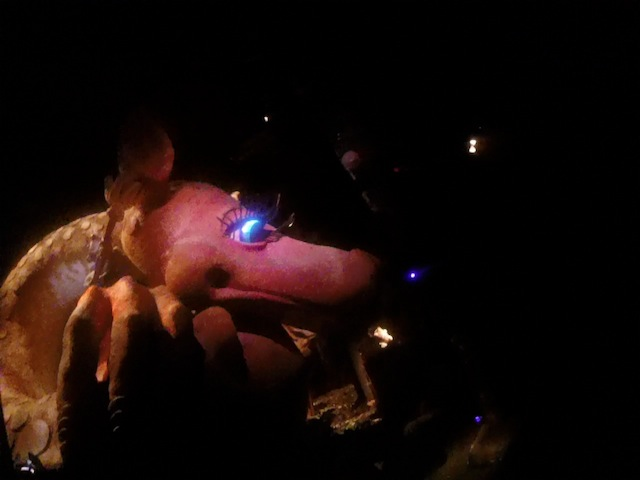
Why am I shooting at a giant pig in a ride themed to mining?
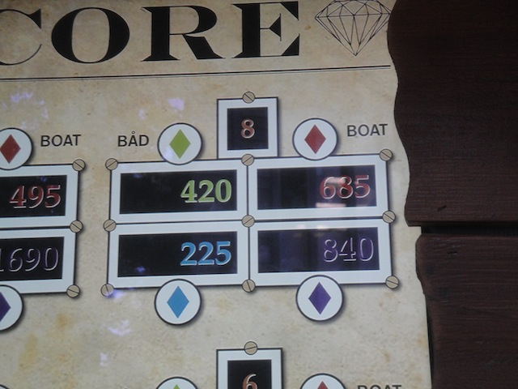
The bad news. I STILL suck at shooting dark rides. The good news. I didn't get last place!!
Not sure if this is a show or what? I just know that it's cool.
BEST BUMPER CARS EVER!!! Not only do they have no stupid rules at bumping, but they have fiberglass so its a STRONG impact!! =)
Apparently, you used to be able to shoot people on the ride while bumping them. Bummer that it doesn't work, but I don't mind since these are the best bumper cars ever.
Once you feed the fish, it starts with them puking yolks. And now they can freaking fly!!! Dammit!!!
No need to worry. They only closed off the front temporarily so that a special group can ride there.
We had to ride Daemonen at night (well, as night as it gets in Copenhagen). We just had to.
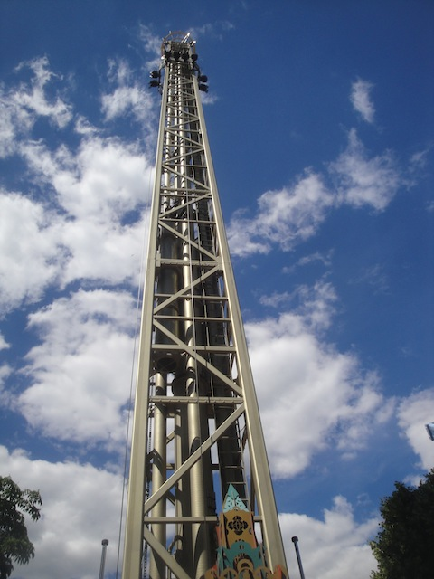
Random ride on the Space Shot.
Time for a Kevin is an idiot and hurts himself story. We decided to take another ride on Vertigo since its fun and there's no line at like 9:30 PM. So I get on the ride. You know how the ride is themed to a plane and has those flaps it uses to enhance the theme. Yeah, I got in the seat, pulled down my OTSR, and waited for the ride to start. The ride starts, and I wasn't looking at my knees, cause the flap goes down and crushes my knee. So my knee is being squeezed to death and I'm trying to notify the operator. But it's too late. The ride has begun and I'm trying at this point to pull my knee out of there. After about 30 seconds of the ride and my knee being stuck while flipping and diving 100 ft. in the air, I manage to free my knee and finally enjoy my ride. Many people would scream, saying this ride is unsafe, it must be torn down, and I must be compensated for this experience. Why should I? I wasn't paying attention and my knee got crushed. That's my fault, not the parks, and I wish more Americans would stop ruining all sorts of cool fun by trying to find any oppertunity they can to sue whenever they can instead of taking responsibility for their own f*ck-ups.
Getting myself a spot to watch the Lights of Tivoli.
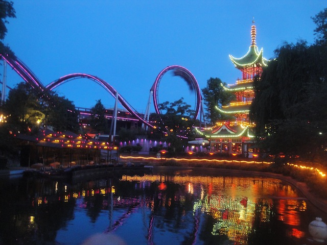
Love this shot of Daemon with the lights of Tivoli.
 Sweet. Now we can watch the Lights of Tivoli.
Sweet. Now we can watch the Lights of Tivoli.
 Yes, I know that all of Tivoli lights up and sparkles at night time so beautifully, but the park does have a light show right after it closes to show off its beauty.
Yes, I know that all of Tivoli lights up and sparkles at night time so beautifully, but the park does have a light show right after it closes to show off its beauty.
And yeah. It's just stunningly beautiful. I loved Tivoli Gardens and look foreword to coming back next time I'm in Copenhagen.
Bon Bon Land
Home
|